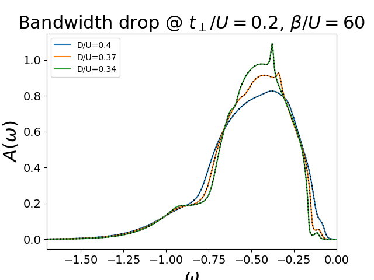

Evolution of DOS as function of temperature¶
Using a real frequency solver in the IPT scheme the Density of states is tracked through the first orders transition.
Out:
D/U: 0.4 tp/U: 0.2 Beta 60
D/U: 0.37037037037 tp/U: 0.2 Beta 60
D/U: 0.344827586207 tp/U: 0.2 Beta 60
0.999643296063
0.999643302756
0.999643308605
# Created Tue Jun 14 15:44:38 2016
# Author: Óscar Nájera
from __future__ import division, absolute_import, print_function
import numpy as np
import scipy.signal as signal
from scipy.integrate import trapz
import matplotlib.pyplot as plt
from joblib import Parallel, delayed
import dmft.common as gf
import dmft.ipt_real as ipt
from dmft.utils import optical_conductivity
plt.matplotlib.rcParams.update({'axes.labelsize': 22,
'xtick.labelsize': 14, 'ytick.labelsize': 14,
'axes.titlesize': 22})
def loop_bandwidth(drange, tp, beta, seed='mott gap'):
"""Solves IPT dimer and return Im Sigma_AA, Re Simga_AB
returns list len(betarange) x 2 Sigma arrays
"""
s = []
g = []
w = np.linspace(-6, 6, 2**13)
dw = w[1] - w[0]
gssi = gf.semi_circle_hiltrans(w + 5e-3j - tp - 1)
gsai = gf.semi_circle_hiltrans(w + 5e-3j + tp + 1)
nfp = gf.fermi_dist(w, beta)
for D in drange:
print('D/U: ', D, 'tp/U: ', tp, 'Beta', beta)
(gss, gsa), (ss, sa) = ipt.dimer_dmft(
1, tp, nfp, w, dw, gssi, gssi, conv=1e-2, t=(D / 2))
g.append((gss, gsa))
s.append((ss, sa))
return np.array(g), np.array(s), w, nfp
def plot_spectralfunc(gwi, drange, yshift=False):
plt.figure()
shift = 0
for (gss, gsa), D in zip(gwi, drange):
Awloc = -.5 * (gss + gsa).imag / np.pi
print(trapz(Awloc, w))
plt.plot(w, Awloc, label=r'D/U={:.2}'.format(D))
plt.plot(w, Awloc * nfp, 'k:')
plt.xlabel(r'$\omega$')
plt.ylabel(r'$A(\omega)$')
plt.legend(loc=0)
plt.xlim([-1.7, 0])
drange = 1 / np.array([2.5, 2.7, 2.9])
giw, swi, w, nfp = loop_bandwidth(drange, 0.2, 60)
plot_spectralfunc(giw, drange)
plt.title(r"Bandwidth drop @ $t_\perp/U=0.2$, $\beta/U=60$")
#giw, swi, w, nfp = loop_bandwidth(drange, 0.3, 180)
#plot_spectralfunc(giw, drange)
#plt.title(r"Bandwidth drop @ $t_\perp/U=0.17$, $\beta/U=150$")
Total running time of the script: ( 0 minutes 0.823 seconds)